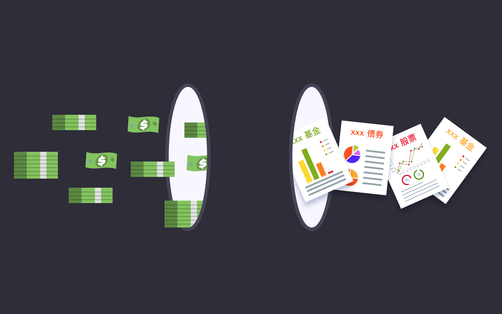

为什么我每个月辛辛苦苦工作，认认真真攒钱，却还是那么穷？
其实，你不妨换一个方式问自己：凭什么努力工作就应该变得富有？或者说，你有认识谁，是通过辛勤工作变得富有的？这个系列教程虽然是关于投资美股的，但在最开始，我想先和你聊一聊，财富究竟是怎样获得的。
劳动收入和资本收入
我们大多数人，每个月凭借着体力或脑力劳动，领着固定的工资，盼望着升职加薪。这样的收入来源非常稳定，然而问题在于，劳动收入的天花板是非常明显的。如果你的月工资是 2000 元，那么把心思放在提高自己的劳动技能稀缺度、熟练度等方面，的确有可能让你的收入增加到 10000 元甚至更高。
然而，工作一段时间后，你的劳动收入终将达到一个瓶颈，很难再突破下去。不考虑那些极端特殊的情况和人才，即使在北上广这样的一线城市，程序员的月薪天花板在 3-5 万元左右，教师的天花板在 2-3 万元左右，快递小哥的天花板在 1.5 万元左右。不是因为他们不够勤奋、不够努力，而是他们已经到达了社会对于劳动这个要素给予的报价上限。
没错，并不是你越努力，劳动收入就能越高。从某种程度上来说，劳动收入更取决于稀缺性。这也是为什么，即使在同一家公司，决定你整体薪酬水平的并非个人的努力程度，而是岗位。然而，如果你把眼界再放宽些，将劳动这个生产要素和其它生产要素相比，在整个社会层面上，它又是充裕的。这是什么意思呢？例如技术要素或土地要素：一项领先的技术往往可以带来时间和成本上的巨大优势，一块稀缺的土地资源可以拍出天价。可是，对于一个劳动者而言，在通常情况下，不管他有多厉害，一旦他的报价超过一个上限，我们会发现，总能找到相同水平，但要价更低的替代者。
与此同时，你一定也在各类新闻上看到过，许多公司的 CEO 每年只领一美元象征性的年薪。当然了，这些高管的报酬会通过股票等各种方式来补偿。不过，就如《21 世纪资本论》所述的那样，整个世界的财富差距正在逐渐拉大，如今的美国 70% 的财富掌握在最富有的 10% 的人手上，而最前面的 1% 的人，他们拥有的财富占了近 35%。对这部分人来说，他们不再需要靠劳动换取收入，相反，他们已经达到了「钱生钱」的境界。他们手中握有大量的资产，例如公司、股票、土地、债券等等，随着这些资产的增值，他们的财富也在不断膨胀。这就是所谓的资本收入。
当然，纯粹只依靠劳动收入，或只有资本收入的两个人群，都是极端的两个端点。对于我们大部分人来说，现阶段最主要的收入来源，肯定还是按月发放的工资劳动收入。这并不是说花时间提升自己是没有意义的，而是说，你应该清晰地认识到自己所处行业和职位的天花板在哪里，一旦你的劳动收入达到了这个社会接受的天花板，从个人层面做出再多努力，也难有质的改变。
因此，一个理想的财富管理模式，应该是尽可能地将自己每个月固定的工资提升到天花板上限，同时将这些现金流再去投入购买资产，随着资产的升值产生资本收入。换言之，劳动收入是我们大多数人积累初始财富的通用方式，而想要实现财富的快速增长，把钱拿在手里肯定是跑不赢通货膨胀的，把它们置换成资产是更好的选择。

好的资产总是稀缺的。买房、自己创办公司、囤茅台、比特币、基金，甚至前几年炒作大蒜价格的「蒜你狠」，如果操作得当，都能为你带来资本收入。而这其中，门槛最低的，恐怕还是金融性资本收入了。
金融性资本收入带给我们的三大信心
金融性资本收入，包含了股票、债券、基金、理财等金融产品带来的收益。它的魅力，来自于它能带给我们每个人三大信心。
1. 超级回报的可能性
这一点其实并不仅仅适用于金融性资本收入，而是资本收入本身所具有的魅力。
涨薪的幅度如果有 30%～50%，已经是相当大了。再加上我们前面提到的劳动收入天花板效应，工作越久，劳动收入的想像空间也就越小。
而资本收入并没有这样的天花板，如果你挑选正确，还有可能享受到超级回报。腾讯自 2004 年上市至今，13 年的时间里，估值翻了 500 多倍。那时候的 1 万元，假设一直持有到现在，已经价值 500 多万元。而苹果在过去一年的时间里，也从每股 110 元上涨到了近 180 元，如果你重仓苹果，资产已经增加了 60%。
在这里，不仅仅有百分比的差异，时间也是另一个重要的差异。在你有一定财富的基础上，工资这样的劳动收入对财富的提升效应是微不足道的。假设你现在有 110 万元，如果全部购入苹果的股票，一年的时间就已经可以变成 180 万元。然而，如果这 70 万的增值要用工资来实现，即使按中国人均工资收入最高的城市北京来算，9000 元的月薪要积累到 70 万元，则需要大约 78 个月，也就是六年半的时间。
当然，这一切的前提，是你要发现优质的资产。这不是一件简单的事情，但至少给你提供了可能性。而这种可能性，是劳动收入所无法提供的。
2. 你就是不用干活的老板
许多人羡慕老板的生活，或者想要自己当老板，源自于对老板的刻板印象：底下的人辛苦工作帮老板赚大钱了，老板拿的是大头，自己永远是那点固定工资。这个问题的实质，其实是财富的分配。创造财富的可能是劳动者，但是掌握分配权的，却一定是财富的所有者（如公司股东）。
因此，掌握财富的分配权非常重要，而花钱买入金融性资产，可能是这个世界上最容易的获取所有权的方式了。你不需要去工商局登记注册，不需要考虑招聘，不需要考虑业绩指标……你要做的，只是在交易所买下 10 支股票，瞬间你就成为了 10 家公司的小小股东之一，这些公司赚钱了，你作为企业的所有者之一，哪怕微不足道，却能享有利润的分配和企业估值的增长收益。这其实给了你极大的信心，相当于除了自己努力工作之外，你还可以仅仅通过购入股票，就同时雇佣了多个世界上最优秀的管理团队和员工，让他们为你打工。
3. 钱是平等的
作为一名劳动者，在市场竞争中，你会发现竞争如此激烈。招聘时要看各类证书和经历，入职后免不了评级打分，一不小心还要被末位淘汰。
如果你想成为一名苹果的员工呢？在 Apple Park，这里有近 2 万名员工，你必须有十分亮丽的教育背景和工作经历，才有机会成为那里的一员。
现在，欢迎你来到钱的世界，这里就公平多了。在这里，钱本身没有好坏优劣之分。巴菲特的钱可以买入苹果的股票，你的钱，同样也可以。钱的无差异性，让你不仅可以成为一个不用干活的老板，通过股票市场，你还可以成为任意一家公司的老板。
当然，在真实世界中，多多少少肯定还会存在着一些准入门槛，大多体现在资金规模层面上。部分私募基金只面对特定群体发售，理财产品五万起售，或者你想买入腾讯的股票？按照香港交易所的规定，购入股票的最小单位是「一手」，即 100 股，按腾讯最近 400 多港元的股价来看，你必须要一次性拿出约 4 万人民币，才能成为腾讯的股东。
但是，和买房、自己投钱创办公司等相比，一手腾讯股票的 4 万块钱，对大多数人容易多了。加上近些年来 P2P 金融等领域的快速发展，越来越多的资产项目可以 1 元起购，也能享受到原来至少 100 万起购的信托收益了。在这一点上，金融性资产面前，钱钱平等。
超级回报，也对应着超级亏损
我不得不在此强调的是，本次教程中所涉及的任何例子，都不构成具体的投资建议。你一定要明白，我们前面提到的超级回报，其所对应的悲观情况，便是超级亏损。
超级亏损的风险，主要来自于标的资产的灭失和金融性资本的价格下跌。
前者很容易理解，把货币转换为金融性资产后，一旦相应的资产灭失，就会彻底血本无归。例如，P2P 平台跑路已经不是什么新鲜事了。这一类的风险，其实倒还可以防范，通过正规渠道，购买正规的资产，基本能保障安全。
真正具有杀伤力的，是金融资产的价格暴跌。其实，货币也同样存在这样的问题，你手中持有的货币，会随着时间而通货膨胀，变得越来越不值钱。只不过在一个社会环境稳定的国家，这样的通胀是缓慢的，但金融性资产不同，一只股票可以一夜之间暴跌 50%，相当于一夜之间财富缩水一半。例如，红黄蓝幼儿园在今年的丑闻曝光后，一夜之间股价就下跌了 46%。既然你是经验丰富的投资者，也难免会有看走眼的时候，像对冲基金大佬 Bill Ackman，其重仓的生物医药股 Valeant 在一系列丑闻曝光后，股价从 2015 年的高点 250 多美元，一路下跌到了今天的 20 美元。
想要通过金融性资产赚钱，也必须做好超级亏损的心理准备。这也是为什么许多金融性资产在购买前，都必须要求你完成风险等级测试，以评估你的风险承诺能力。在这个付费系列教程中，我们也会从选股方面，来探讨如何尽可能地降低美股的亏损风险。
关于本系列付费教程
本系列付费教程的主题，是用价值投资的思维框架来投资美股。从下一篇开始，我们会真正进入正题，并依次探讨以下话题：
为什么选择投资美股
为什么选择价值投资
价值投资框架下，如何选股
财务基础入门101
选择我的美股券商
买美股，用美元
买入卖出我的第一支美股
可以看到，整个教程主要分为了两大部分：第一部分，是从「道」的层面，帮助你建立起一套属于自己的投资理念和思维框架。第二部分，则是从「术」的层面向你介绍美股的基本开户指南、入门知识、汇款指南等内容。
需要强调的是……
这套教程中没有我个人的 Secret Sauce，我不是在分享我个人的投资经验、秘籍或建议，更不是告诉你，如何能够持续获得超越市场的收益率。从大的角度来看，教程只谈论了两件事情：一是美股市场、价值投资、基本面分析、财务入门的一些基本理念，二是开户、入金等实操类事项。
通过这个教程，你不可能获得对某个行业深刻的洞见，也不会知道具体该买哪只股票。这些是你需要靠自己真正下功夫努力的地方。可以这样说，这套教程内的所有内容，如果你有足够的耐心和时间，都可以自行摸索入门，你现在只是有了另一个选择，通过这套教程来节约你「被领进门」的时间成本，但之后依然是「修行在个人」。
最后，请时刻谨记：股市有风险，投资需谨慎。这个教程没有办法帮你百分百赚钱，否则它就不会只卖这个价了：）